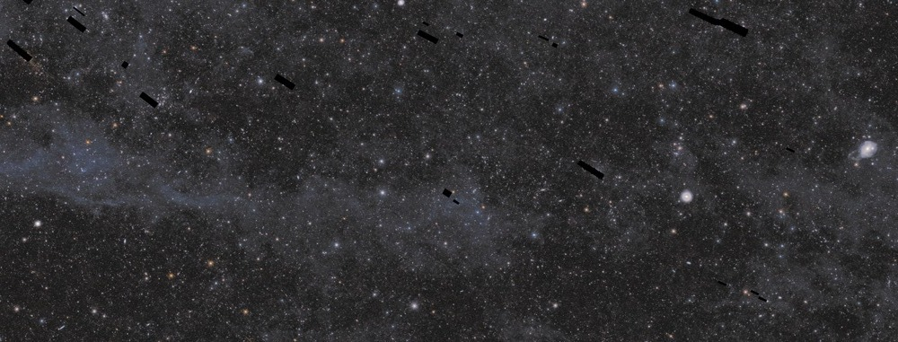

Euclid DR1 South — Horologium Explorer

Drag or pinch to explore. Focus the image and use the arrow keys to pan, plus or minus to zoom, H to reset, N for original detail and E to explore a marked region. When several marked regions are available, E shows the region circles and focuses the first. Use Tab to choose a circle and Enter to open it. Browser zoom remains available with Control or Command and plus or minus.

Loading local image tiles.